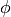
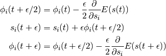
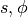
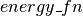

Hybrid Monte-Carlo Sampling¶
Note
This is an advanced tutorial, which shows how one can implemented Hybrid Monte-Carlo (HMC) sampling using Theano. We assume the reader is already familiar with Theano and energy-based models such as the RBM.
Note
The code for this section is available for download here.
Theory¶
Maximum likelihood learning of energy-based models requires a robust algorithm to sample negative phase particles (see Eq.(4) of the Restricted Boltzmann Machines (RBM) tutorial). When training RBMs with CD or PCD, this is typically done with block Gibbs sampling, where the conditional distributions and are used as the transition operators of the Markov chain.
In certain cases however, these conditional distributions might be difficult to sample from (i.e. requiring expensive matrix inversions, as in the case of the “mean-covariance RBM”). Also, even if Gibbs sampling can be done efficiently, it nevertheless operates via a random walk which might not be statistically efficient for some distributions. In this context, and when sampling from continuous variables, Hybrid Monte Carlo (HMC) can prove to be a powerful tool [Duane87]. It avoids random walk behavior by simulating a physical system governed by Hamiltonian dynamics, potentially avoiding tricky conditional distributions in the process.
In HMC, model samples are obtained by simulating a physical system, where
particles move about a high-dimensional landscape, subject to potential and
kinetic energies. Adapting the notation from [Neal93], particles are
characterized by a position vector or state  and
velocity vector . The combined state of a
particle is denoted as
and
velocity vector . The combined state of a
particle is denoted as  . The Hamiltonian is then defined
as the sum of potential energy (same energy function defined by
energy-based models) and kinetic energy
. The Hamiltonian is then defined
as the sum of potential energy (same energy function defined by
energy-based models) and kinetic energy  , as follows:
, as follows:

Instead of sampling directly, HMC operates by sampling from the canonical distribution . Because the two variables are independent, marginalizing over  is trivial and recovers the original distribution of interest.
Hamiltonian Dynamics
State  and velocity are modified such that
remains constant throughout the simulation.
The differential equations are given by:
and velocity are modified such that
remains constant throughout the simulation.
The differential equations are given by:
(1)
As shown in [Neal93], the above transformation preserves volume and is reversible. The above dynamics can thus be used as transition operators of a Markov chain and will leave invariant. That chain by itself is not ergodic however, since simulating the dynamics maintains a fixed Hamiltonian . HMC thus alternates hamiltonian dynamic steps, with Gibbs sampling of the velocity. Because and are independent, sampling is trivial since , where is often taken to be the uni-variate Gaussian.
The Leap-Frog Algorithm
In practice, we cannot simulate Hamiltonian dynamics exactly because of the problem of time discretization. There are several ways one can do this. To maintain invariance of the Markov chain however, care must be taken to preserve the properties of volume conservation and time reversibility. The leap-frog algorithm maintains these properties and operates in 3 steps:
(2)
We thus perform a half-step update of the velocity at time
, which is then used to compute
and  .
.
Accept / Reject
In practice, using finite stepsizes  will not preserve
exactly and will introduce bias in the simulation.
Also, rounding errors due to the use of floating point numbers means that the
above transformation will not be perfectly reversible.
will not preserve
exactly and will introduce bias in the simulation.
Also, rounding errors due to the use of floating point numbers means that the
above transformation will not be perfectly reversible.
HMC cancels these effects exactly by adding a Metropolis accept/reject
stage, after  leapfrog steps. The new state is
accepted with probability , defined as:
leapfrog steps. The new state is
accepted with probability , defined as:
HMC Algorithm
In this tutorial, we obtain a new HMC sample as follows:
- sample a new velocity from a univariate Gaussian distribution
- perform leapfrog steps to obtain the new state
- perform accept/reject move of
Implementing HMC Using Theano¶
In Theano, update dictionaries and shared variables provide a natural way to implement a sampling algorithm. The current state of the sampler can be represented as a Theano shared variable, with HMC updates being implemented by the updates dictionary of a Theano function.
We breakdown the HMC algorithm into the following sub-components:
- : a symbolic Python function which, given an initial position and velocity, will perform leapfrog updates and return the symbolic variables for the proposed state .
- : a symbolic Python function which given a starting position,
generates by randomly sampling a velocity vector. It then
calls and determines whether the transition
 is to be accepted.
is to be accepted. - : a Python function which, given the symbolic outputs of , generates the dictionary of updates for a single iteration of HMC.
- : a Python helper class which wraps everything together.
simulate_dynamics
To perform leapfrog steps, we first need to define a function over
which can iterate over. Instead of implementing Eq. (2)
verbatim, notice that we can obtain and
by performing an initial half-step update for
, followed by full-step updates for  and
one last half-step update for . In loop form, this gives:
(3)![& \phi_i(t + \epsilon/2) = \phi_i(t) -
\frac{\epsilon}{2} \frac{\partial{}}{\partial s_i} E(s(t)) \\
& s_i(t + \epsilon) = s_i(t) + \epsilon \phi_i(t + \epsilon/2) \\
& \text{For } m \in [2,n]\text{, perform full updates: } \\
& \qquad
\phi_i(t + (m - 1/2)\epsilon) = \phi_i(t + (m-3/2)\epsilon) -
\epsilon \frac{\partial{}}{\partial s_i} E(s(t + (m-1)\epsilon)) \\
& \qquad
s_i(t + m\epsilon) = s_i(t) + \epsilon \phi_i(t + (m-1/2)\epsilon) \\
& \phi_i(t + n\epsilon) = \phi_i(t + (n-1/2)\epsilon) -
\frac{\epsilon}{2} \frac{\partial{}}{\partial s_i} E(s(t + n\epsilon)) \\](_images/math/a99de769f8e3dd968747c2d02522f04759410fb4.png)
The inner-loop defined above is implemented by the following
function, with , and  replacing and
respectively.
replacing and
respectively.
def leapfrog(pos, vel, step):
"""
Inside loop of Scan. Performs one step of leapfrog update, using
Hamiltonian dynamics.
Parameters
----------
pos: theano matrix
in leapfrog update equations, represents pos(t), position at time t
vel: theano matrix
in leapfrog update equations, represents vel(t - stepsize/2),
velocity at time (t - stepsize/2)
step: theano scalar
scalar value controlling amount by which to move
Returns
-------
rval1: [theano matrix, theano matrix]
Symbolic theano matrices for new position pos(t + stepsize), and
velocity vel(t + stepsize/2)
rval2: dictionary
Dictionary of updates for the Scan Op
"""
# from pos(t) and vel(t-eps/2), compute vel(t+eps/2)
dE_dpos = TT.grad(energy_fn(pos).sum(), pos)
new_vel = vel - step * dE_dpos
# from vel(t+eps/2) compute pos(t+eps)
new_pos = pos + step * new_vel
return [new_pos, new_vel],{}
The function performs the full algorithm of Eqs.
(3). We start with the initial half-step update of
and full-step of , and then scan over the method
times.
def simulate_dynamics(initial_pos, initial_vel, stepsize, n_steps, energy_fn):
"""
Return final (position, velocity) obtained after an `n_steps` leapfrog
updates, using Hamiltonian dynamics.
Parameters
----------
initial_pos: shared theano matrix
Initial position at which to start the simulation
initial_vel: shared theano matrix
Initial velocity of particles
stepsize: shared theano scalar
Scalar value controlling amount by which to move
energy_fn: python function
Python function, operating on symbolic theano variables, used to compute
the potential energy at a given position.
Returns
-------
rval1: theano matrix
Final positions obtained after simulation
rval2: theano matrix
Final velocity obtained after simulation
"""
def leapfrog(pos, vel, step):
""" ... """
# compute velocity at time-step: t + stepsize/2
initial_energy = energy_fn(initial_pos)
dE_dpos = TT.grad(initial_energy.sum(), initial_pos)
vel_half_step = initial_vel - 0.5*stepsize*dE_dpos
# compute position at time-step: t + stepsize
pos_full_step = initial_pos + stepsize * vel_half_step
# perform leapfrog updates: the scan op is used to repeatedly compute
# vel(t + (m-1/2)*stepsize) and pos(t + m*stepsize) for m in [2,n_steps].
(final_pos, final_vel), scan_updates = theano.scan(leapfrog,
outputs_info=[
dict(initial=pos_full_step, return_steps=1),
dict(initial=vel_half_step, return_steps=1),
],
non_sequences=[stepsize],
n_steps=n_steps-1)
# NOTE: Scan always returns an updates dictionary, in case the scanned function draws
# samples from a RandomStream. These updates must then be used when compiling the Theano
# function, to avoid drawing the same random numbers each time the function is called. In
# this case however, we consciously ignore "scan_updates" because we know it is empty.
assert not scan_updates
# The last velocity returned by scan is vel(t + (n_steps-1/2)*stepsize)
# We therefore perform one more half-step to return vel(t + n_steps*stepsize)
energy = energy_fn(final_pos)
final_vel = final_vel - 0.5 * stepsize * TT.grad(energy.sum(), final_pos)
# return new proposal state
return final_pos, final_vel
A final half-step is performed to compute  , and the
final proposed state is returned.
, and the
final proposed state is returned.
hmc_move
The function implements the remaining steps (steps 1 and 3) of an HMC move proposal (while wrapping the function). Given a matrix of initial states () and energy function (), it defines the symbolic graph for computing of HMC, using a given . The function prototype is as follows:
def hmc_move(s_rng, positions, energy_fn, stepsize, n_steps):
"""
This function performs one-step of Hybrid Monte-Carlo sampling. We start by
sampling a random velocity from a univariate Gaussian distribution, perform
`n_steps` leap-frog updates using Hamiltonian dynamics and accept-reject
using Metropolis-Hastings.
Parameters
----------
s_rng: theano shared random stream
Symbolic random number generator used to draw random velocity and
perform accept-reject move.
positions: shared theano matrix
Symbolic matrix whose rows are position vectors.
energy_fn: python function
Python function, operating on symbolic theano variables, used to compute
the potential energy at a given position.
stepsize: shared theano scalar
Shared variable containing the stepsize to use for `n_steps` of HMC
simulation steps.
n_steps: integer
Number of HMC steps to perform before proposing a new position.
Returns
-------
rval1: boolean
True if move is accepted, False otherwise
rval2: theano matrix
Matrix whose rows contain the proposed "new position"
"""
We start by sampling random velocities, using the provided shared RandomStream object. Velocities are sampled independently for each dimension and for each particle under simulation, yielding a matrix.
# sample random velocity for `batchsize` particles
initial_vel = s_rng.normal(size=positions.shape)
Since we now have an initial position and velocity, we can now call the to obtain the proposal for the new state .
# perform simulation of particles subject to Hamiltonian dynamics
final_pos, final_vel = simulate_dynamics(
initial_pos = positions,
initial_vel = initial_vel,
stepsize = stepsize,
n_steps = n_steps,
energy_fn = energy_fn)
We then accept/reject the proposed state based on the Metropolis algorithm.
# accept/reject the proposed move based on the joint distribution
accept = metropolis_hastings_accept(
energy_prev = hamiltonian(positions, initial_vel, energy_fn),
energy_next = hamiltonian(final_pos, final_vel, energy_fn),
s_rng=s_rng)
where and are helper functions, defined as follows.
def metropolis_hastings_accept(energy_prev, energy_next, s_rng):
"""
Performs a Metropolis-Hastings accept-reject move.
Parameters
----------
energy_prev: theano vector
Symbolic theano tensor which contains the energy associated with the
configuration at time-step t.
energy_next: theano vector
Symbolic theano tensor which contains the energy associated with the
proposed configuration at time-step t+1.
s_rng: theano.tensor.shared_randomstreams.RandomStreams
Theano shared random stream object used to generate the random number
used in proposal.
Returns
-------
return: boolean
True if move is accepted, False otherwise
"""
ediff = energy_prev - energy_next
return (TT.exp(ediff) - s_rng.uniform(size=energy_prev.shape)) >= 0
def hamiltonian(pos, vel, energy_fn):
""" ... """
# assuming mass is 1
return energy_fn(pos) + kinetic_energy(vel)
def kinetic_energy(vel):
""" ... """
return 0.5 * (vel**2).sum(axis=1)
finally returns the tuple . is a symbolic boolean variable indicating whether or not the new state should be used or not.
hmc_updates
The purpose of is to generate the dictionary of updates to perform, whenever our HMC sampling function is called. thus receives as parameters, a series of shared variables to update (, and ), and the parameters required to compute their new state.
def hmc_updates(positions, stepsize, avg_acceptance_rate, final_pos, accept,
target_acceptance_rate, stepsize_inc, stepsize_dec,
stepsize_min, stepsize_max, avg_acceptance_slowness):
## POSITION UPDATES ##
# broadcast `accept` scalar to tensor with the same dimensions as final_pos.
accept_matrix = accept.dimshuffle(0, *(('x',)*(final_pos.ndim-1)))
# if accept is True, update to `final_pos` else stay put
new_positions = TT.switch(accept_matrix, final_pos, positions)
Using the above code, the dictionary can be used to update the state of the sampler with either (1) the new state if is True, or (2) the old state if is False. This conditional assignment is performed by the switch op.
expects as its first argument, a boolean mask with the same broadcastable dimensions as the second and third argument. Since is scalar-valued, we must first use dimshuffle to transform it to a tensor with broadcastable dimensions ().
additionally implements an adaptive version of HMC, as implemented in the accompanying code to [Ranzato10]. We start by tracking the average acceptance rate of the HMC move proposals (across many simulations), using an exponential moving average with time constant .
## ACCEPT RATE UPDATES ##
# perform exponential moving average
new_acceptance_rate = TT.add(
avg_acceptance_slowness * avg_acceptance_rate,
(1.0 - avg_acceptance_slowness) * accept.mean())
If the average acceptance rate is larger than the , we
increase the by a factor of in order to increase the
mixing rate of our chain. If the average acceptance rate is too low however,
is decreased by a factor of , yielding a more
conservative mixing rate. The clip op allows us to maintain the
in the range [ , ].
, ].
## STEPSIZE UPDATES ##
# if acceptance rate is too low, our sampler is too "noisy" and we reduce
# the stepsize. If it is too high, our sampler is too conservative, we can
# get away with a larger stepsize (resulting in better mixing).
_new_stepsize = TT.switch(avg_acceptance_rate > target_acceptance_rate,
stepsize * stepsize_inc, stepsize * stepsize_dec)
# maintain stepsize in [stepsize_min, stepsize_max]
new_stepsize = TT.clip(_new_stepsize, stepsize_min, stepsize_max)
The final updates dictionary is then returned:
return [(positions, new_positions),
(stepsize, new_stepsize),
(avg_acceptance_rate, new_acceptance_rate)]
HMC_sampler
We finally tie everything together using the class. Its main elements are:
- : a constructor method which allocates various shared variables and strings together the calls to and . It also builds the theano function , whose sole purpose is to execute the updates generated by .
- : a convenience method which calls the Theano function and returns a copy of the contents of the shared variable .
class HMC_sampler(object):
"""
Convenience wrapper for performing Hybrid Monte Carlo (HMC). It creates the
symbolic graph for performing an HMC simulation (using `hmc_move` and
`hmc_updates`). The graph is then compiled into the `simulate` function, a
theano function which runs the simulation and updates the required shared
variables.
Users should interface with the sampler thorugh the `draw` function which
advances the markov chain and returns the current sample by calling
`simulate` and `get_position` in sequence.
The hyper-parameters are the same as those used by Marc'Aurelio's
'train_mcRBM.py' file (available on his personal home page).
"""
def __init__(self, **kwargs):
self.__dict__.update(kwargs)
@classmethod
def new_from_shared_positions(cls, shared_positions, energy_fn,
initial_stepsize=0.01, target_acceptance_rate=.9, n_steps=20,
stepsize_dec = 0.98,
stepsize_min = 0.001,
stepsize_max = 0.25,
stepsize_inc = 1.02,
avg_acceptance_slowness = 0.9, # used in geometric avg. 1.0 would be not moving at all
seed=12345):
"""
:param shared_positions: theano ndarray shared var with many particle [initial] positions
:param energy_fn:
callable such that energy_fn(positions)
returns theano vector of energies.
The len of this vector is the batchsize.
The sum of this energy vector must be differentiable (with theano.tensor.grad) with
respect to the positions for HMC sampling to work.
"""
batchsize = shared_positions.shape[0]
# allocate shared variables
stepsize = sharedX(initial_stepsize, 'hmc_stepsize')
avg_acceptance_rate = sharedX(target_acceptance_rate, 'avg_acceptance_rate')
s_rng = TT.shared_randomstreams.RandomStreams(seed)
# define graph for an `n_steps` HMC simulation
accept, final_pos = hmc_move(
s_rng,
shared_positions,
energy_fn,
stepsize,
n_steps)
# define the dictionary of updates, to apply on every `simulate` call
simulate_updates = hmc_updates(
shared_positions,
stepsize,
avg_acceptance_rate,
final_pos=final_pos,
accept=accept,
stepsize_min=stepsize_min,
stepsize_max=stepsize_max,
stepsize_inc=stepsize_inc,
stepsize_dec=stepsize_dec,
target_acceptance_rate=target_acceptance_rate,
avg_acceptance_slowness=avg_acceptance_slowness)
# compile theano function
simulate = function([], [], updates=simulate_updates)
# create HMC_sampler object with the following attributes ...
return cls(
positions=shared_positions,
stepsize=stepsize,
stepsize_min=stepsize_min,
stepsize_max=stepsize_max,
avg_acceptance_rate=avg_acceptance_rate,
target_acceptance_rate=target_acceptance_rate,
s_rng=s_rng,
_updates=simulate_updates,
simulate=simulate)
def draw(self, **kwargs):
"""
Returns a new position obtained after `n_steps` of HMC simulation.
Parameters
----------
kwargs: dictionary
The `kwargs` dictionary is passed to the shared variable
(self.positions) `get_value()` function. For example, to avoid
copying the shared variable value, consider passing `borrow=True`.
Returns
-------
rval: numpy matrix
Numpy matrix whose of dimensions similar to `initial_position`.
"""
self.simulate()
return self.positions.get_value(borrow=False)
Testing our Sampler¶
We test our implementation of HMC by sampling from a multi-variate Gaussian distribution. We start by generating a random mean vector and covariance matrix , which allows us to define the energy function of the corresponding Gaussian distribution: . We then initialize the state of the sampler by allocating a shared variable. It is passed to the constructor of along with our target energy function.
Following a burn-in period, we then generate a large number of samples and compare the empirical mean and covariance matrix to their true values.
def sampler_on_nd_gaussian(sampler_cls, burnin, n_samples, dim=10):
batchsize=3
rng = np.random.RandomState(123)
# Define a covariance and mu for a gaussian
mu = np.array(rng.rand(dim) * 10, dtype=theano.config.floatX)
cov = np.array(rng.rand(dim, dim), dtype=theano.config.floatX)
cov = (cov + cov.T) / 2.
cov[numpy.arange(dim), numpy.arange(dim)] = 1.0
cov_inv = linalg.inv(cov)
# Define energy function for a multi-variate Gaussian
def gaussian_energy(x):
return 0.5 * (TT.dot((x-mu),cov_inv)*(x-mu)).sum(axis=1)
# Declared shared random variable for positions
position = shared(rng.randn(batchsize, dim).astype(theano.config.floatX))
# Create HMC sampler
sampler = sampler_cls(position, gaussian_energy,
initial_stepsize=1e-3, stepsize_max=0.5)
# Start with a burn-in process
garbage = [sampler.draw() for r in xrange(burnin)] #burn-in
# Draw `n_samples`: result is a 3D tensor of dim [n_samples, batchsize, dim]
_samples = np.asarray([sampler.draw() for r in xrange(n_samples)])
# Flatten to [n_samples * batchsize, dim]
samples = _samples.T.reshape(dim,-1).T
print '****** TARGET VALUES ******'
print 'target mean:', mu
print 'target cov:\n', cov
print '****** EMPIRICAL MEAN/COV USING HMC ******'
print 'empirical mean: ', samples.mean(axis=0)
print 'empirical_cov:\n', np.cov(samples.T)
print '****** HMC INTERNALS ******'
print 'final stepsize', sampler.stepsize.get_value()
print 'final acceptance_rate', sampler.avg_acceptance_rate.get_value()
return sampler
def test_hmc():
sampler = sampler_on_nd_gaussian(HMC_sampler.new_from_shared_positions,
burnin=1000, n_samples=1000, dim=5)
assert abs(sampler.avg_acceptance_rate - sampler.target_acceptance_rate) < .1
assert sampler.stepsize.get_value() >= sampler.stepsize_min
assert sampler.stepsize.get_value() <= sampler.stepsize_max
The above code can be run using the command: “nosetests -s code/mcrbm/test_hmc.py”. The output is as follows:
[desjagui@atchoum mcrbm]$ python test_hmc.py
****** TARGET VALUES ******
target mean: [ 6.96469186 2.86139335 2.26851454 5.51314769 7.1946897 ]
target cov:
[[ 1. 0.66197111 0.71141257 0.55766643 0.35753822]
[ 0.66197111 1. 0.31053199 0.45455485 0.37991646]
[ 0.71141257 0.31053199 1. 0.62800335 0.38004541]
[ 0.55766643 0.45455485 0.62800335 1. 0.50807871]
[ 0.35753822 0.37991646 0.38004541 0.50807871 1. ]]
****** EMPIRICAL MEAN/COV USING HMC ******
empirical mean: [ 6.94155164 2.81526039 2.26301715 5.46536853 7.19414496]
empirical_cov:
[[ 1.05152997 0.68393537 0.76038645 0.59930252 0.37478746]
[ 0.68393537 0.97708159 0.37351422 0.48362404 0.3839558 ]
[ 0.76038645 0.37351422 1.03797111 0.67342957 0.41529132]
[ 0.59930252 0.48362404 0.67342957 1.02865056 0.53613649]
[ 0.37478746 0.3839558 0.41529132 0.53613649 0.98721449]]
****** HMC INTERNALS ******
final stepsize 0.460446628091
final acceptance_rate 0.922502043428
As can be seen above, the samples generated by our HMC sampler yield an empirical mean and covariance matrix, which are very close to the true underlying parameters. The adaptive algorithm also seemed to work well as the final acceptance rate is close to our target of .
References¶
| [Alder59] | Alder, B. J. and Wainwright, T. E. (1959) “Studies in molecular dynamics. 1. General method”, Journal of Chemical Physics, vol. 31, pp. 459-466. |
| [Andersen80] | Andersen, H.C. (1980) “Molecular dynamics simulations at constant pressure and/or temperature”, Journal of Chemical Physics, vol. 72, pp. 2384-2393. |
| [Duane87] | Duane, S., Kennedy, A. D., Pendleton, B. J., and Roweth, D. (1987) “Hybrid Monte Carlo”, Physics Letters, vol. 195, pp. 216-222. |
| [Neal93] | (1, 2) Neal, R. M. (1993) “Probabilistic Inference Using Markov Chain Monte Carlo Methods”, Technical Report CRG-TR-93-1, Dept. of Computer Science, University of Toronto, 144 pages |